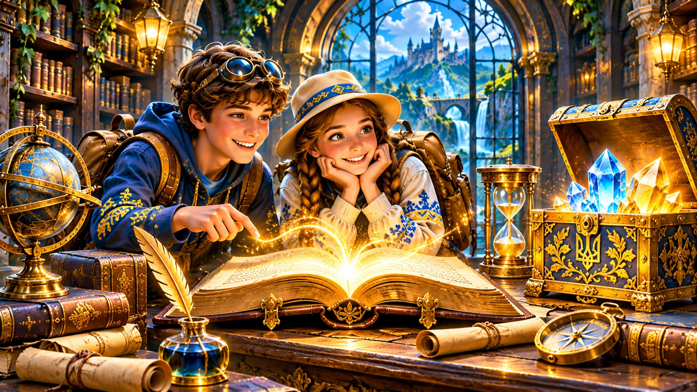

Лексичні скарби
Добирай синоніми й антоніми, розрізняй пряме та переносне значення.

Відкривай мовні скарби, досліджуй закономірності української мови та застосовуй знання у творчих завданнях. Обери свій клас або переглянь методичні рекомендації.
Досліджуй звуки, букви, лексичне значення слова та будову речення.
Добирай синоніми й антоніми, розрізняй пряме та переносне значення.
Спостерігай за звуками мовлення, наголосом і співвідношенням звуків та букв.
Учися будувати зрозумілі висловлення й правильно оформлювати речення.
Відкрий можливості словотвору та досліджуй самостійні частини мови.
Знаходь твірну основу, добирай споріднені слова й аналізуй способи творення.
Визначай граматичні ознаки іменника та вдосконалюй навички відмінювання.
Уточнюй описи й кількісні характеристики в усному та писемному мовленні.
Досліджуй дієслово, його форми та службові частини мови.
Розрізняй вид, час і спосіб дієслова, пояснюй їхню роль у тексті.
Упізнавай дієслівні форми та вживай їх доречно у висловленнях.
З’ясовуй роль прийменників, сполучників і часток у побудові речень.
Відкривай закономірності синтаксису простого речення та пунктуації.
Знаходь підмет і присудок, розрізняй двоскладні й односкладні речення.
Визначай означення, додатки й обставини та їхню роль у змісті висловлення.
Розпізнавай звертання, вставні слова й відокремлені члени речення.
Досліджуй смислові зв’язки між частинами складних речень.
Установлюй відношення між рівноправними частинами та добирай сполучники.
Визначай головну й підрядну частини, види підрядних та засоби зв’язку.
Пояснюй вибір коми, крапки з комою, двокрапки й тире.
Сайт можна застосовувати для пояснення нового матеріалу, тренування, повторення, групової роботи й формувального оцінювання.
Підходить для пошуку помилок, аналізу мовних явищ і пояснення правил.
Допомагає організувати дослідницькі завдання та перевірку мовних гіпотез.
Можуть слугувати підсумковою командною пригодою або серією тематичних випробувань.
Перейти до квестів